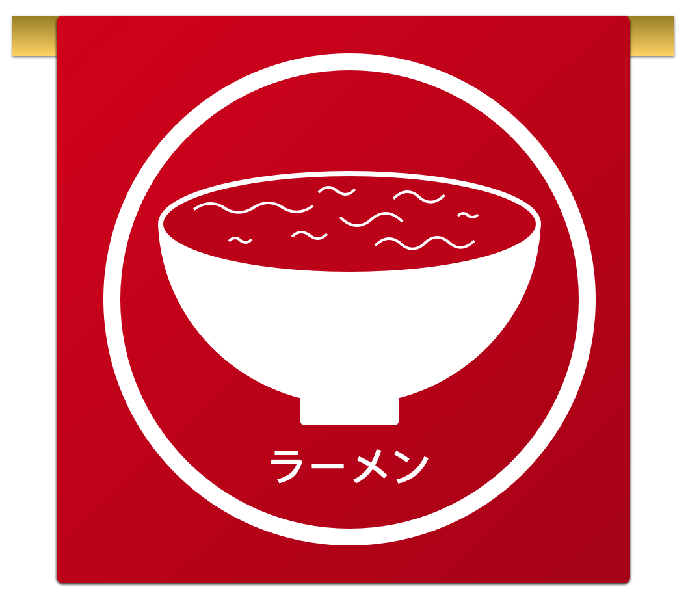
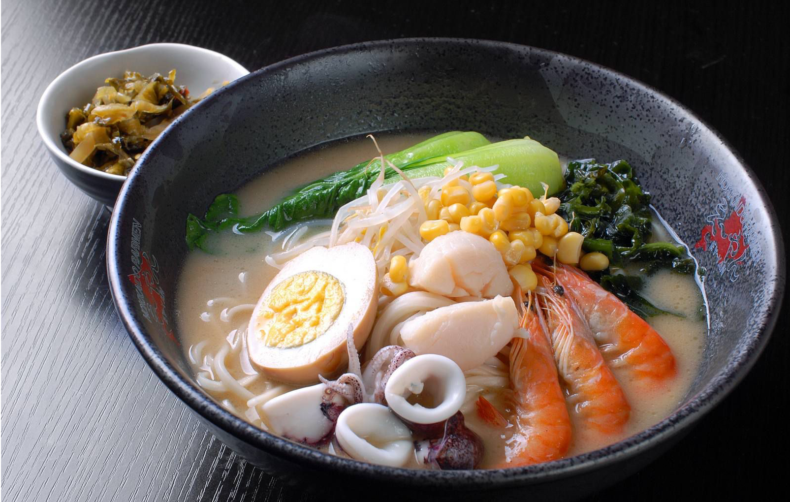
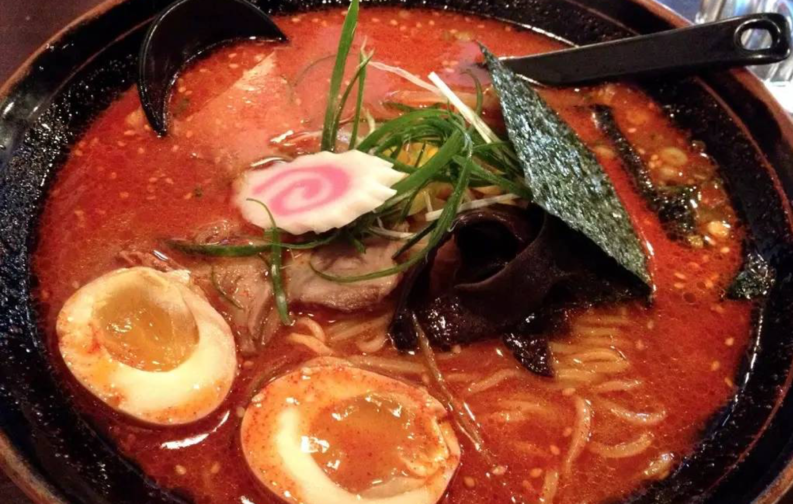
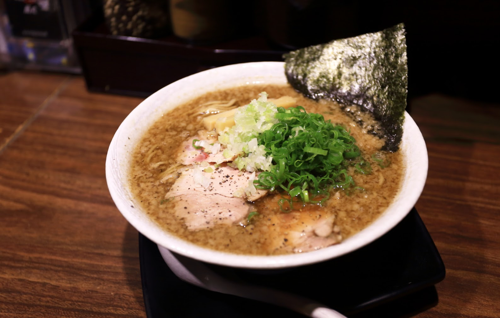
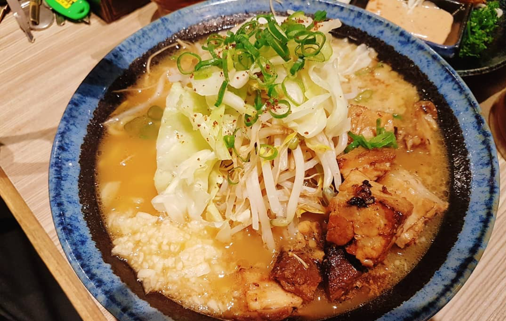
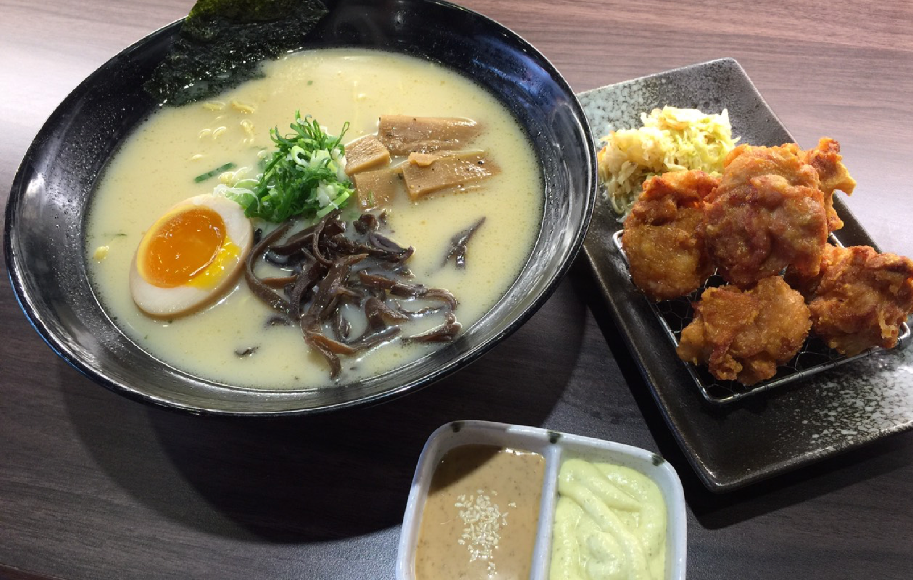
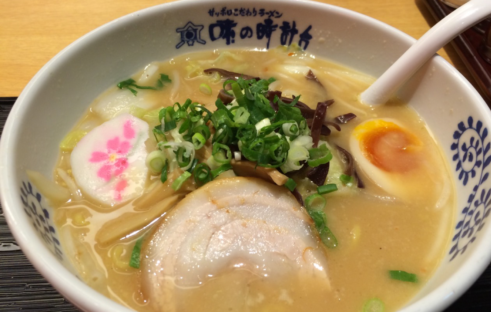
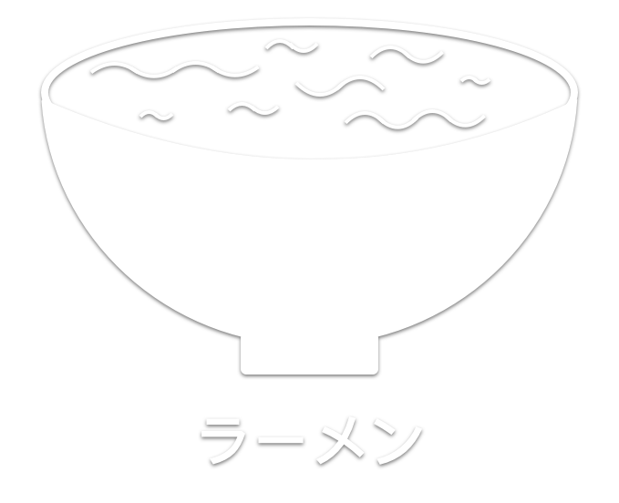

- ラーメン -

海鮮拉麵
特色即在於甘醇香濃，並蘊含香濃的口感，精華而成的湯頭油脂豐富、香 濃順口的甘美滋味令人入口不忘

地獄拉麵
使用豚骨的濃厚湯頭為基底再加上鬼 匠遵循古法特製的香辣醬，麻香中帶 點微辣喜愛吃辣的朋友千萬不要錯過

醬油拉麵
湯頭是以雞骨為主原料，配以昆布去除肉腥味，再加上風鰹節(柴魚)小魚干、醬油一起熬製，整體的口味較為清淡不油膩

蒜味拉麵
湯頭是以雞骨再加上蒜頭，增加饕客能夠一飽口福的慾望，當然也可以選擇更換其他湯頭呦

無骨雞腿拉麵
使用豚骨的濃厚湯頭再配上香脆雞排，讓原本就濃厚的豚骨拉麵再增添一份香辣與脆感

味增拉麵
特色即在於甘醇香濃，並蘊含大豆強 烈的口感，混合了豬骨、雞骨及新鮮 蔬果的精華而成的湯頭油脂豐富、香 濃順口的甘美滋味令人入口不忘

- おかず -
天婦羅
關東天婦羅烹飪時用的是雞蛋和麵粉，海鮮比例高，以芝麻油炸（有時會混進大豆油），油溫不高，需要的時間長，關西用的是水和麵粉，蔬菜比例高，以熱油炸，時間短。
海帶絲
海帶絲、豆乾、豆皮與綠豆芽的組合，帶來豐富口感。如果家有牙口不好的長輩或小孩，可將海帶絲改以海帶芽替代，營養價值依舊。
溏心蛋
只要切開如白玉般Q彈有勁的蛋白，油亮順滑的香濃蛋黃就瞬間吸引了大家的目光，一口咬下，感覺到它溫柔純郁的香氣在口中蔓延開，非常迷人！
牛蒡絲
去皮後的牛蒡接觸空氣立刻氧化、變色，因此一定要先準備一盆加有白醋的清水，刨出來的牛蒡絲立刻放入醋水中浸泡，不但保持色澤，炒出來的口感也比較軟，而醋在加熱過程中會揮發，所以不用擔心殘留醋味。

美味從這開始
- ここから美味しい -


信箱:123@gmail.com
電話:02-4567-4455
地址:台北市中正區中正路2號
營業時間:早上11點~晚上9點
Copyright © 2019 Andy Beef All Right Received. | 版權所有 © Andy Beef有限公司